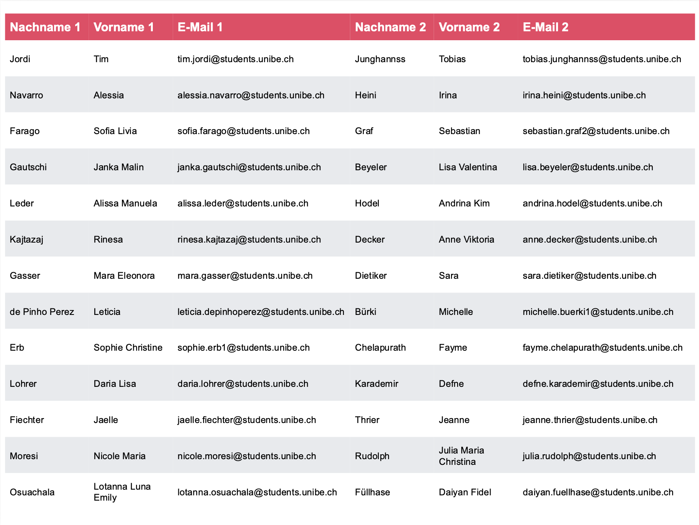
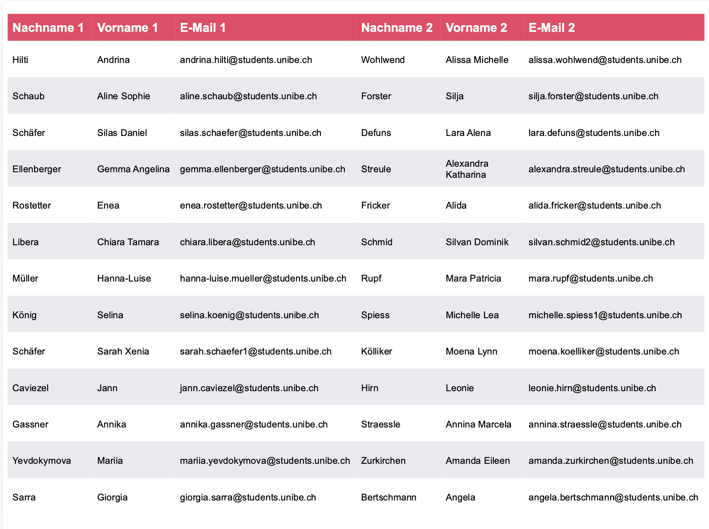
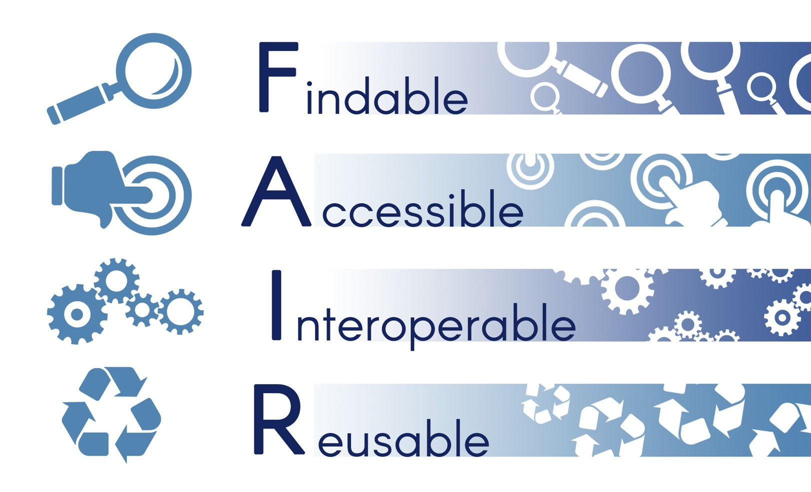
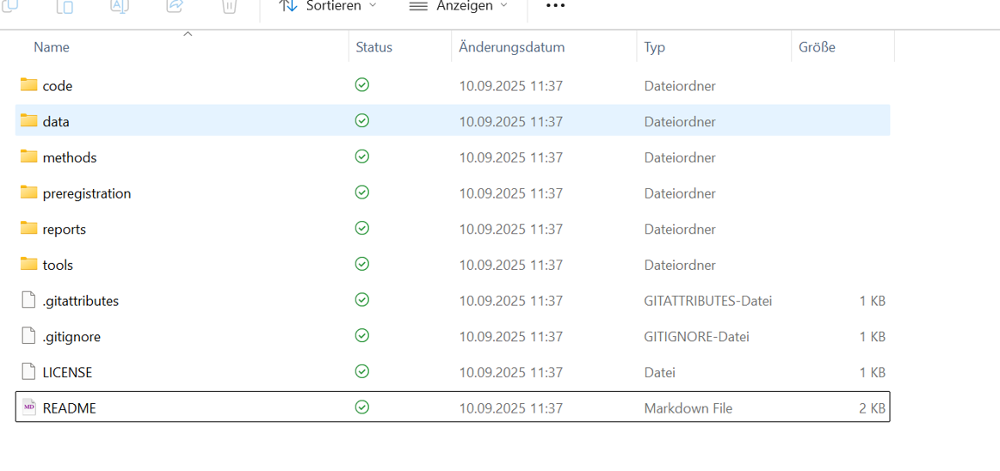
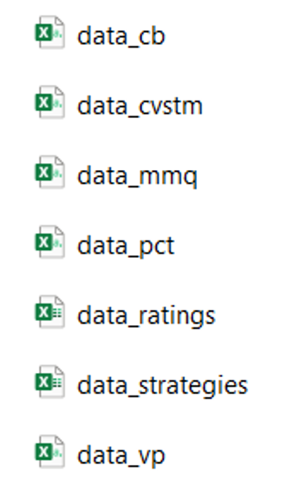

this_is_a_very_long_function_name <- (something = "this", requires = "many", arguments = "long words and sentences") #–> bad
this_is_a_very_long_function_name <- (something = "this",
requires = "many",
arguments = "long words and sentences") #–> goodR u Ready? FS2026 | Psychologie der Digitalisierung - Einheit 3
R u Ready? Reproduzierbare Datenaufbereitung und -analyse mit R
FS 2026
LV-Leitung: Dr. Sandra Grinschgl / MSc. Laura Hirt
Tutor: BSc. Lars Schilling
3. Einheit, 04.03.2026
Fragen zum Datenanalyseplan:

jetzt auch auf Homepage unter “Hausübungen” ergänzt
Fragen zu den Hands On Übungen der ersten beiden Wochen?
Was hat euch Schwierigkeiten bereitet?
Welche Übungen sollen wir gemeinsam live durchgehen?
Gibt es noch Unklarheiten?
Musterlösungen online für Block 1!
zeigen:
R OberflächeErklärung zu Paketen
Variable zuweisen mit <- und nicht =
Vektoren mit c() für combine
3 Arten von Vektoren
Heute:
Peer-Pairings
12.15 (Liste auch auf Ilias)

Liste zeigen, Namen aufrufen und zusammensetzen lassen - zumindest später bei Hands On wenn sie wollen
Peer-Pairings
16.15 (Liste auch auf Ilias)

Liste zeigen, Namen aufrufen und zusammensetzen lassen
Forschungsdatenmanagement:
Planung, Organisation, Speicherung, Dokumentation und Archivierung von Daten während des gesamten Forschungsprozesses
Warum Datenmanagement?:
- Datenflut in der Forschung
- Risiken ohne gutes Management (z.B. keine Möglichkeit zur Replikation & Reproduktion)
Ziele von Datenmanagement:
Qualitätssicherung
Sicherheit/Datenschutz & Ethik
Reproduzierbarkeit
Nachhaltigkeit und Transparenz
-> gute wissenschaftliche Praxis
Link zu letzter Einheit - Forschungsdatenmanagement gehört zu guter wissenschaftlicher Praxis
Forschungsdatenmanagement (2)
Standards & Vorgaben:
FAIR Prinzipien
Data Management Plan (SNF)
Förderorganisationen & Journals
Praktische Umsetzung:
Ordnerstrukturen & Versionierung
Dokumentation (README, Codebooks)
Offene Dateiformate

F – auffindbar (aus Wikipedia: https://de.wikipedia.org/wiki/FAIR-Prinzipien)
[Bearbeiten | Quelltext bearbeiten]
F1 (Meta-)Daten sind mit einem weltweit eindeutigen und dauerhaften persistent identifier versehen.
F2 (Meta-)Daten werden mit umfangreichen Metadaten beschrieben.
F3 (Meta-)Daten sind in einer durchsuchbaren Ressource registriert oder indiziert.
F4 (Meta-)Daten enthalten eine klare und eindeutige Identifizierung der Daten, die sie beschreiben.
A – zugänglich
[Bearbeiten | Quelltext bearbeiten]
A1 (Meta-)Daten können anhand ihrer Identifizierung über ein standardisiertes Kommunikationsprotokoll abgerufen werden.
A1.1 das Protokoll ist offen, frei und universell implementierbar.
A1.2 das Protokoll ermöglicht bei Bedarf ein Authentifizierungs- und Autorisierungsverfahren.
A2 – (Meta-)Daten sind zugänglich, auch wenn die Daten nicht mehr verfügbar sind.
I – interoperabel
[Bearbeiten | Quelltext bearbeiten]
I1 (Meta-)Daten verwenden eine formale, zugängliche, gemeinsame und weithin anwendbare Sprache zur Wissensdarstellung.
I2 (Meta-)Daten verwenden Vokabulare, die den FAIR-Grundsätzen entsprechen.
I3 (Meta-)Daten enthalten qualifizierte Verweise auf andere (Meta-)Daten.
R – wiederverwendbar
[Bearbeiten | Quelltext bearbeiten]
R1 (Meta-)Daten haben mehrere genaue und relevante Attribute.
R1.1 (Meta-)Daten werden mit einer klaren und zugänglichen Datennutzungslizenz freigegeben.
R1.2 (Meta-)Daten sind mit ihrer Herkunft verbunden.
R1.3 (Meta-)Daten entsprechen den für den Bereich relevanten Gemeinschaftsstandards.
Ordnerstrukturen: Psych-DS
Standard für die Organisation von Daten, Skripten und weiteren Studiendokumenten

Ein Standard von vielen Möglichen
Hier auch Ordner und Files, die wir für unsere Zwecke nicht verwenden werden. Z.B. Github Files, sind zwar gut für Version Control und ein wichtiges Tool, aber würde den Rahmen sprengen.
Psych-DS für unsere Zwecke:
Leicht abgeändertes Format für unser Seminar
- Macht es leichter für uns, die Abgaben zu kontrollieren
Hilft euch, eine übersichtliche Ordnerstruktur zu behalten
–> Ordner “R_You_Ready”
Psych-DS: Wichtigste Grundsätze
Datensätze nur in “data”.
Die Rohdatenfiles werden nicht bearbeitet!
Aufbereitete Datensätze -> data/processed
Codebook in Ordner “data”
Datenanalyseplan in “preregistration”
Skripte in “code”
Aufbereitungsschritte im Skript “processing”
Analyse (mit den aufbereiteten Datensätzen) im Skript “analysis”
Keine Redundanzen!
Keine redundanten Dateien
Skripte: Keine redundanten Pakete (nur Pakete laden, die auch verwendet werden), Aufarbeitungsschritte & Analysen.
Bewertungsrelevant für die Abschlussarbeit
Psychdsish
📦 Packages welche helfen sollen, Psych-DS Struktur & Stylevorgaben leichter einzuhalten.
Für Masterarbeiten: Psychdsish
Funktionen wie:
create_project_skeleton(),check_unused_objects(),validator()🥅 Ziel: Einhaltung von Standards erleichtern
Wiederholung: Benennung von Variablen etc. in R
Namen können aus Buchstaben, Zahlen und Zeichen (_ oder .) bestehen
Er muss mit Buchstaben begonnen werden und darf keine Leerzeichen beinhalten
Sonderzeichen und Grossbuchstaben sollten vermieden werden; keine Namen verwenden, die schon an Funktionen vergeben sind (z.B.
mean(),data())Empfehlung für leserlichen Code: snake_case
Name soll Variable inhaltlich bestmöglich beschreiben
Reproduzierbarkeit: „clarity instead of brevity“
Benennung am besten in Englisch, um internationalen Standards zu folgen
Kommentierung von R-Code mit #
Text nach # wird ignoriert (für 1 Zeile)
Neue Zeilen müssen wieder mit # beginnen
Alternative: R Notebooks, Markdown oder Quarto –> EH5
Weitere Style Konventionen:
Leerzeichen:
Vor und nach mathematischen Operatoren:
2+2vs2 + 2Vor und nach Zuweisungen:
x<-sum(1+2)vsx <- sum(1 + 2)Aber nicht vor und nach sich öffnenden oder schliessenden Klammern oder Anführungszeichen
Nach Kommas (aber nicht davor)
Weitere Leerzeichen erlaubt, wenn die Leserlichkeit erhöht wird (z.B. bei Einrückungen)
Verwendung des Pipe Operators (
%>%oder|>) –> Erklärung folgt in kommenden Wochen!Zeilenumbrüche für langen Code verwenden
👗
styler: Funktion, die Code automatisch in dieses Format bringt. 👉 Hands On!
Weitere Style Konventionen:
📖 Lesbarkeit für Menschen und Maschine
🧑💻 Für Menschen: Verwende aussagekräftige Dateinamen, die klar beschreiben, was in der Datei enthalten ist.
💻 Für Maschinen: Vermeide Leerzeichen, Sonderzeichen und Symbole in Dateinamen – bleibe bei Buchstaben, Zahlen und Unterstrichen.
🔢 Struktur: Benenne Dateien so, dass sie auch mit der Standard-Sortierung von Ordnern sinnvoll angeordnet werden. Ein bewährter Ansatz ist, mit Zahlen zu beginnen, um eine logische Reihenfolge abzubilden.
z.B.
01_processing
02_descriptive_analyses
03_inferential_analyses
Codebook
Naive Personen sollen Datensatz nachvollziehen können (Reproduzierbarkeit!)
Beinhaltet eine Liste und Beschreibung aller Variablen, z.B.
Wie wurde die Variable erhoben (z.B. aus welchem Fragebogen)?
Wie wurde die Variable berechnet (z.B. Summenscore, Mittelwert)?
Welche Werte kann die Variable annehmen (theoretisches Minimum und Maximum)?
Wichtige Grundsätze für das Codebook
- Am besten für Rohdaten als auch weiter-verarbeitete Daten
- Variablennamen in Codebook sollen identisch zu Variablennamen in Datensatz sein
- Variable muss ausführlich genug beschrieben sein, sodass andere Personen sie nachvollziehen können
Codebook: Vorlage
Kann in verschiedenen Formaten erstellt werden (Word, Excel, etc.)
Excel-Vorlage für das Seminar (siehe ZIP-Datei Abschlussprojekt)
Beispiel: “Example_Codebook” - Ordner
Für weitere Anleitungen siehe “Guideline Codebook”
Siehe auch: Pennington (2023)
Buch von Pennington kann man bei Bedarf in Bib oder bei Sandra ausborgen
Rohdaten für Grinschgl et al. (2020)
Bereits vorhanden in euren Ordnern (r_you_ready)
Wir mergen diese heute oder in EH4 zu einem vollständigen Datensatz –> dat_full

Codebook
Notwendig für „gemergten“ Datensatz „dat_full“
Vorlage ist auf Englisch, kann aber auch auf Deutsch ausgefüllt werden (selbes gilt für Datenanalyseplan)
Basierend auf Horstmann et al. (2020)
Abgabe bis EH6 (25.03.) über ILIAS und via Email an Peer-Partner:in
Danach Peer Feedback
Idealerweise Codebook auch für Rohdaten, aber für das Seminar nur für dat_full
Reproduzierbare Auswertung (R-Skripte): Grundsätze
Digitale Rohdaten
Skripte (processing & analyses) sollen den gesamten Weg von den Rohdaten bis hin zu den Ergebnissen dokumentieren
Wenn man euren Code auf den Rohdaten laufen lässt, sollte man (fehlerfrei) zu den Ergebnissen kommen
Skripte sind kommentiert und sinnvoll gegliedert
Hands on!
Projekte
Daten einlesen
Daten speichern
Fortsetzung Coding Basics
Heute haben wir…
… Uns mit den Grundlagen von Forschungsdatenmanagement beschäftigt
… Psych-DS als einen Standard kennengelernt
… Style-Empfehlungen für R Code besprochen
… die Gründe für und den Aufbau von einem Codebook besprochen
… Datensätze in R importiert
… diese gemerged und exportiert (Fortsetzung in EH 4)
Hausübungen
Datenanalyseplan bis Mi, 11.03.2026
Codebook erstellen bis Mi, 25.03.2026
Literatur:
Horstmann, K. T., Arslan, R. C., & Greiff, S. (2020). Generating Codebooks to Ensure the Independent Use of Research Data: Some Guidelines. European Journal of Psychological Assessment, 36(5), 721–729. https://doi.org/10.1027/1015-5759/a000620
Pennington, C. R. (2023). A student’s guide to open science: Using the replication crisis to reform psychology. McGraw Hill.